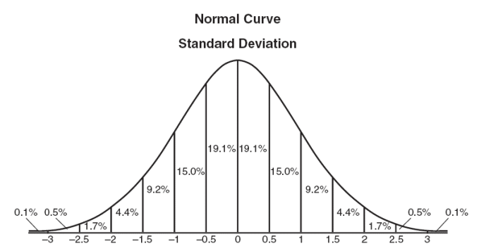
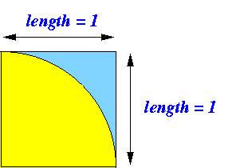
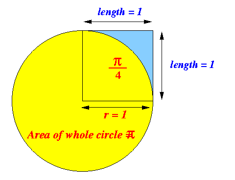
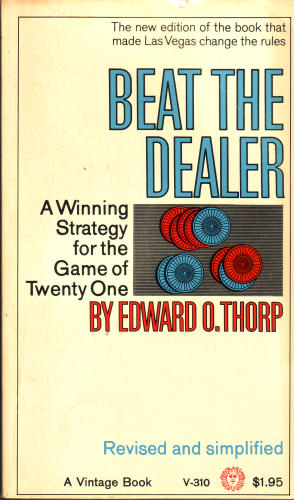

- Terminology:
- Pseudo random number generator = a device (method) that generate random numbers taken from some distribution of values
- Commonly used distribution of values:
- Uniform [a,b] distribution
- Every value between a and b is generated with equal probability (likelihood)
- (Standard) Normal distribution
- The value are
generated
with the following distribution of
probability (likelihood)

- The value are
generated
with the following distribution of
probability (likelihood)
- Uniform [a,b] distribution
- The method random()
returns a
uniform [0,1)
pseudo random number
That means it can return any values between 0 and 1, including 0. but not including 1.
- Example: print 10 random numbers
(between [0, 1))
public class Random1 { public static void main(String[] args) { for ( int i = 0 ; i < 10; i++ ) { System.out.println( Math.random() ); // Print a random number } } }
- Example Program:
(Demo above code)

- Prog file: click here
How to run the program:
- Right click on link and
save in a scratch directory
- To compile: javac Random1.java
- To run: java Random1
- Monte Carlo experiments
are experiments with a
random outcome with
a certain probability of success
Example: Monte Carlo experiment
- Die roll with
outcome = 6
- The probability of this experiment = 1/6
- Die roll with
outcome = 6
- If the probability of success
of
the Monte Carlo experiment
is
difficult to compute,
we can obtain an approximation
using the following
procedure:
- Performing the Monte Carlo experiment
for many many many times
and observe the
outcomes.
- The probability of success
of the Monte Carlo experiment can be
approximated by:
# times that the outcome was succesful ----------------------------------------- # times that the experiment was performed
- Performing the Monte Carlo experiment
for many many many times
and observe the
outcomes.
- Monte Carlo Method:
- Monte Carlo Method = a computer simulation that performs Monto Carlo experiments aimed to compute the above probability
- We will illustrate the
Monto Carlo Method
with a simple experiment to find
Pi
- Problem:
- Assume we have
no knowledge of the value of
π (= 3.1415926535...)
I.e., you cannot your calculator or any other information source. - Find an estimate for π
We will now design a Monte Carlo experiment that can be used to find an estimate for π.
- Assume we have
no knowledge of the value of
π (= 3.1415926535...)
- Consider the following funny looking
dart board:
- The dimension of the
dart board
is 1 x 1.
- A quarter circle with radius r = 1 is inscribed in the board.
 Facts:
- The dimension of the
dart board
is 1 x 1.
- The Monte Carlo experiment:
- You throw darts at this board
blindfolded
(we check only the darts that land on the board)
When you are blindfolded, then the probability of a dart landing on any position inside the 1 x 1 quared board is identical)
- What is the probability that a dart hits the yellow portion of the dart board ???
- You throw darts at this board
blindfolded
- Computing
the probability that
a dart hits the
yellow portion of the dart board:
- Fact from the construction of the
dart board:
Area of the quarter circle Probability [ dart hits yellow portion ] = -------------------------- Area of the 1 x 1 square = Area of the quarter circle(Because the area of the 1 x 1 square is equal to 1).
- Fact from the construction of the
dart board:
- The area of the quarter circle
can be computed as follows:
- The area of the full circle = π × 1 2 = π
- The area of the quarter circle = π / 4

- Therefore:
Probability [ dart hits yellow portion ] = Area of the quarter circle = π/4
- The above description give rise to a
Monte Carlo experiment
that we can use to estimate π.
- Recall
Monte Carlo experiment:
- An experiment (= throwing darts) with a random outcome with a certain probability of success (= darts land inside the quarter cicle with probability = π/4)
We can use a Monte Carlo Method (simulating throwing darts) to estimate this probability of success !
- Monte Carlo Simulation (throwing darts):
int i; int nThrows = 0; int nSuccess = 0; /* ============================== Throw a large number of darts ============================== */ for (i = 0; i < aLargeNumber; i++) { "Throw a dart"; nThrows++; if ( "dart lands inside quarter circle" ) nSuccess++; } /* ================================================================= Estimate the probability of a dart landing inside quarter circle ================================================================== */ System.out.println("Pi/4 = " + (double)nSuccess/(double)nThrows );
- Simulating a dart throw:
- A computer program
can never throw a real dart
- A simulation
will only consider
the result of a dart throw
- Result of a dart throw:
- The dart lands in some
coordinate (x, y)
where
x and
x
are
uniform [0..1) distributed
(I.e., any point inside the 1 x 1 square will be equally likely to be "hit")
- The dart lands in some
coordinate (x, y)
where
x and
x
are
uniform [0..1) distributed
- Simulating a dart throw:
- x = Math.random()
- y = Math.random()
- A computer program
can never throw a real dart
- Checking whether a dart landed
the inside
the quarter cicle:
- A point
(x,y)
inside the
quarter circle will satisfy the following
inequality:
x2 + y2 ≤ 12 (Equation of a circle)
- A point
(x,y)
inside the
quarter circle will satisfy the following
inequality:
- Java program of the
Monte Carlo Simulation:
public class ComputePi1 { public static void main(String[] args) { int i; int nThrows = 0; int nSuccess = 0; double x, y; for (i = 0; i < 1000000 ; i++) { x = Math.random(); // Throw a dart y = Math.random(); nThrows++; if ( x*x + y*y <= 1 ) nSuccess++; } System.out.println("Pi/4 = " + (double)nSuccess/(double)nThrows ); System.out.println("Pi = " + 4*(double)nSuccess/(double)nThrows ); } }Output:
Pi/4 = 0.785784 Pi = 3.143136
- Example Program:
(Demo above code)
- Prog file: click here
How to run the program:
- Right click on link and
save in a scratch directory
- To compile: javac ComputePi1.java
- To run: java ComputePi1
- In the 1960's, Edward Thorp wrote and published the book
"Beat the Dealer"
on Black Jack:
click here
 - The book presents a system of card counting and how to
play Black Jack
- Many people have written computer programs
that simulate a Black Jack games (among them was me :-))
- The simulations show that Thorpe system does work - you
can win at Black jack with his system by counting cards.
- As a result, casinos in Las Vegas impose measures to throw out people that count cards...